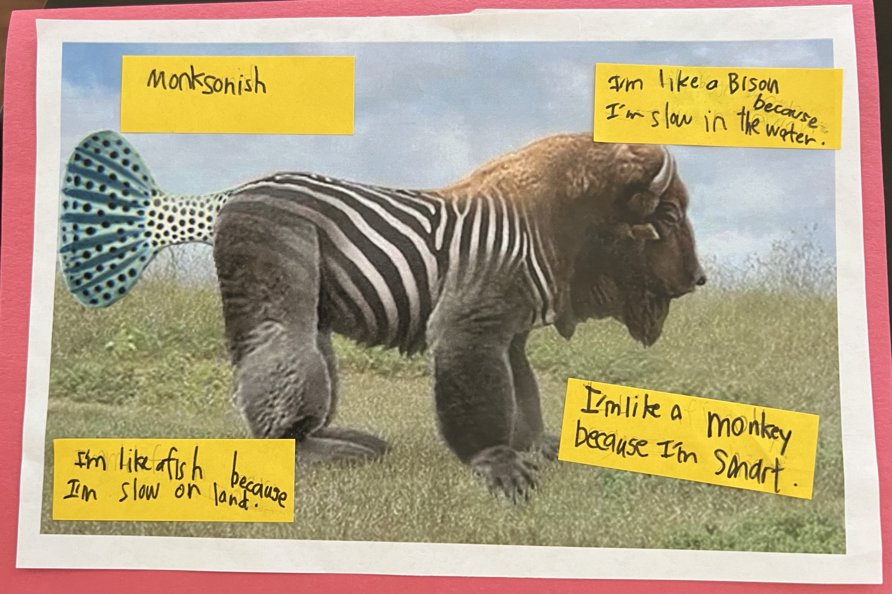

Aren’t you just amazed by how awesome Sam is?
This presentation will teach you a little bit about Sam.
Qualities I look for in a friend
- similar interests
- not bossy
- truthful
- likes playing Minecraft
CODING*
* I made this myself3 animals that describe me
The best part of me is my
mind
I can code with my mind. I remember when I had to keep trying to make my code work.
Your brain stops growing in mid-to-late 20s. My brain is pink and squishy. My mind can remember somethings but can't remember others.

- Mom
- Dad
- Abby
- Sam
- Miles
My Most Exciting Moment
Have you ever wanted to communicate to a computer? I learned JSON which is how the server and the client send messages. The client is your device and the serveer is where all the data that doesn't fit on the client is stored.
First, I looked up JSON on YouTube and opened Visual Studio Code to write code. The video was made by this YouTuber that is just realy easy for me to understand named Ligitermoose.
Then, I watched the video and stopped 5 minutes in. He said that everything in quotes before a colon is a tag and after the colon is what the tag is set to. A tag can be set to more tags, a number or a string of text.
Finally, I wrote some code about my family in Visual Studio Code. It had each family member's age and last name. I saw no red text! I knew it worked because there were no errors. Now I know that code is super super super super super super super super super simple. It's so easy, I want to learn more.
My Role Model
My role model is my dad. My dad taught me how computers work. He encouraged me to code. He is hardworking. My dad and I have a lot in common, like we both like programming. I want to be like my dad because he helps other programmers make their programs better and faster. When I grow up I want to be a programmer just like my dad.
My last name Boodman comes from the word budman, an old job that my ancestors had, so it was their name. Now that name was translated to English, as Boodman and that job makes no sense.
“What I love most about Sam is his willingness to try things, even when he doesn’t like them. For example, this summer I enrolled Sam in a Chinese Summer Camp in Shanghai. Sam hated it—he told me so—but every day, he got up and went to camp without complaining. He didn’t like the lunch they served, so he made sure to eat a big breakfast to avoid being hungry later. Sam may be only 8 years old, but he’s already so considerate.
Beyond that, Sam is almost always in a good mood and generally happy. I love being around him because talking to him is always interesting—he has such a unique perspective on things, unlike anyone I’ve ever met. He constantly makes me think, and I really enjoy our conversations.”
Susan Boodman, mom
There's nobody on Earth like Sam.
Of course he's quite clever and picks things like math and coding up quickly. It's fun to teach him things.
But what I like most about Sam is his attitude. He's almost always in a bubbly happy mood. He doesn't let things get him down too long. He's always open to try something new, and he's curious about *everything*. You can have a two hour conversation with Sam about almost anything – how engines work, why the sky is blue, how credit cards work, how music works. He always reminds me how fun it is to learn and what an interesting place the world is.
Aaron Boodman, dad
Sam is awesome.
He is fun, positive, enthusiastic, energetic, and smart. He's happy and positive about everything and he loves to have fun. He is so funny too. He also loves running around. He is so smart too, he loves learning new things, doing math, and programming. Sam is super great and happy all the time.
Abby Boodman
Sam is a delightful student with an incredible mind. He is interested in the world around him and enjoys learning. His inquisitive mind and ability to apply what he learns will give him great success in life! In addition, he is a cool kid and I enjoy talking with him!
Emily Laidlaw, tutor